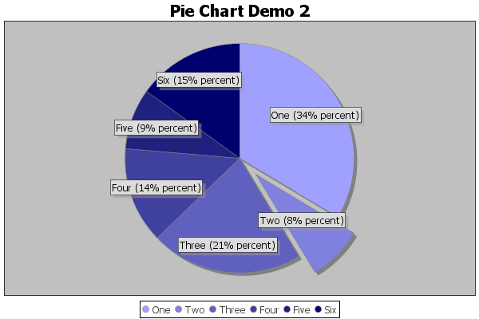

Package org.jfree.chart.plot
Class PiePlot
- java.lang.Object
-
- org.jfree.chart.plot.Plot
-
- org.jfree.chart.plot.PiePlot
-
- All Implemented Interfaces:
java.io.Serializable,java.lang.Cloneable,java.util.EventListener,AnnotationChangeListener,AxisChangeListener,MarkerChangeListener,LegendItemSource,DatasetChangeListener,org.jfree.util.PublicCloneable
public class PiePlot extends Plot implements java.lang.Cloneable, java.io.Serializable
A plot that displays data in the form of a pie chart, using data from any class that implements thePieDatasetinterface. The example shown here is generated by thePieChartDemo2.javaprogram included in the JFreeChart Demo Collection:
Special notes:
- the default starting point is 12 o'clock and the pie sections proceed in a clockwise direction, but these settings can be changed;
- negative values in the dataset are ignored;
- there are utility methods for creating a
PieDatasetfrom aCategoryDataset;
- See Also:
Plot,PieDataset, Serialized Form
-
-
Field Summary
Fields Modifier and Type Field Description static doubleDEFAULT_INTERIOR_GAPThe default interior gap.static java.awt.PaintDEFAULT_LABEL_BACKGROUND_PAINTThe default section label background paint.static java.awt.FontDEFAULT_LABEL_FONTThe default section label font.static java.awt.PaintDEFAULT_LABEL_OUTLINE_PAINTThe default section label outline paint.static java.awt.StrokeDEFAULT_LABEL_OUTLINE_STROKEThe default section label outline stroke.static java.awt.PaintDEFAULT_LABEL_PAINTThe default section label paint.static java.awt.PaintDEFAULT_LABEL_SHADOW_PAINTThe default section label shadow paint.static doubleDEFAULT_MINIMUM_ARC_ANGLE_TO_DRAWThe default minimum arc angle to draw.static doubleDEFAULT_START_ANGLEThe default starting angle for the pie chart.protected static java.util.ResourceBundlelocalizationResourcesThe resourceBundle for the localization.static doubleMAX_INTERIOR_GAPThe maximum interior gap (currently 40%).-
Fields inherited from class org.jfree.chart.plot.Plot
DEFAULT_BACKGROUND_ALPHA, DEFAULT_BACKGROUND_PAINT, DEFAULT_FOREGROUND_ALPHA, DEFAULT_INSETS, DEFAULT_LEGEND_ITEM_BOX, DEFAULT_LEGEND_ITEM_CIRCLE, DEFAULT_OUTLINE_PAINT, DEFAULT_OUTLINE_STROKE, MINIMUM_HEIGHT_TO_DRAW, MINIMUM_WIDTH_TO_DRAW, ZERO
-
-
Constructor Summary
Constructors Constructor Description PiePlot()Creates a new plot.PiePlot(PieDataset dataset)Creates a plot that will draw a pie chart for the specified dataset.
-
Method Summary
All Methods Instance Methods Concrete Methods Deprecated Methods Modifier and Type Method Description voidclearSectionOutlinePaints(boolean notify)Clears the section outline paint settings for this plot and, if requested, sends aPlotChangeEventto all registered listeners.voidclearSectionOutlineStrokes(boolean notify)Clears the section outline stroke settings for this plot and, if requested, sends aPlotChangeEventto all registered listeners.voidclearSectionPaints(boolean notify)Clears the section paint settings for this plot and, if requested, sends aPlotChangeEventto all registered listeners.java.lang.Objectclone()Returns a clone of the plot.voiddraw(java.awt.Graphics2D g2, java.awt.geom.Rectangle2D area, java.awt.geom.Point2D anchor, PlotState parentState, PlotRenderingInfo info)Draws the plot on a Java 2D graphics device (such as the screen or a printer).protected voiddrawItem(java.awt.Graphics2D g2, int section, java.awt.geom.Rectangle2D dataArea, PiePlotState state, int currentPass)Draws a single data item.protected voiddrawLabels(java.awt.Graphics2D g2, java.util.List keys, double totalValue, java.awt.geom.Rectangle2D plotArea, java.awt.geom.Rectangle2D linkArea, PiePlotState state)Draws the labels for the pie sections.protected voiddrawLeftLabel(java.awt.Graphics2D g2, PiePlotState state, PieLabelRecord record)Draws a section label on the left side of the pie chart.protected voiddrawLeftLabels(KeyedValues leftKeys, java.awt.Graphics2D g2, java.awt.geom.Rectangle2D plotArea, java.awt.geom.Rectangle2D linkArea, float maxLabelWidth, PiePlotState state)Draws the left labels.protected voiddrawPie(java.awt.Graphics2D g2, java.awt.geom.Rectangle2D plotArea, PlotRenderingInfo info)Draws the pie.protected voiddrawRightLabel(java.awt.Graphics2D g2, PiePlotState state, PieLabelRecord record)Draws a section label on the right side of the pie chart.protected voiddrawRightLabels(KeyedValues keys, java.awt.Graphics2D g2, java.awt.geom.Rectangle2D plotArea, java.awt.geom.Rectangle2D linkArea, float maxLabelWidth, PiePlotState state)Draws the right labels.protected voiddrawSimpleLabels(java.awt.Graphics2D g2, java.util.List keys, double totalValue, java.awt.geom.Rectangle2D plotArea, java.awt.geom.Rectangle2D pieArea, PiePlotState state)Draws the pie section labels in the simple form.booleanequals(java.lang.Object obj)Tests this plot for equality with an arbitrary object.protected java.awt.geom.Rectangle2DgetArcBounds(java.awt.geom.Rectangle2D unexploded, java.awt.geom.Rectangle2D exploded, double angle, double extent, double explodePercent)Returns a rectangle that can be used to create a pie section (taking into account the amount by which the pie section is 'exploded').protected java.awt.geom.Point2DgetArcCenter(PiePlotState state, java.lang.Comparable key)Returns the center for the specified section.booleangetAutoPopulateSectionOutlinePaint()Returns the flag that controls whether or not the section outline paint is auto-populated by thelookupSectionOutlinePaint(Comparable)method.booleangetAutoPopulateSectionOutlineStroke()Returns the flag that controls whether or not the section outline stroke is auto-populated by thelookupSectionOutlinePaint(Comparable)method.booleangetAutoPopulateSectionPaint()Returns the flag that controls whether or not the section paint is auto-populated by thelookupSectionPaint(Comparable)method.java.awt.PaintgetBaseSectionOutlinePaint()Returns the base section paint.java.awt.StrokegetBaseSectionOutlineStroke()Returns the base section stroke.java.awt.PaintgetBaseSectionPaint()Returns the base section paint.PieDatasetgetDataset()Returns the dataset.org.jfree.util.RotationgetDirection()Returns the direction in which the pie sections are drawn (clockwise or anti-clockwise).doublegetExplodePercent(int section)Deprecated.UsegetExplodePercent(Comparable)instead.doublegetExplodePercent(java.lang.Comparable key)Returns the amount that the section with the specified key should be exploded.booleangetIgnoreNullValues()Returns the flag that controls whethernullvalues in the dataset are ignored.booleangetIgnoreZeroValues()Returns the flag that controls whether zero values in the dataset are ignored.doublegetInteriorGap()Returns the interior gap, measured as a percentage of the available drawing space.java.awt.PaintgetLabelBackgroundPaint()Returns the section label background paint.AbstractPieLabelDistributorgetLabelDistributor()Returns the object responsible for the vertical layout of the pie section labels.java.awt.FontgetLabelFont()Returns the section label font.doublegetLabelGap()Returns the gap between the edge of the pie and the labels, expressed as a percentage of the plot width.PieSectionLabelGeneratorgetLabelGenerator()Returns the section label generator.protected doublegetLabelLinkDepth()Returns the distance that the end of the label link is embedded into the plot, expressed as a percentage of the plot's radius.doublegetLabelLinkMargin()Returns the margin (expressed as a percentage of the width or height) between the edge of the pie and the link point.java.awt.PaintgetLabelLinkPaint()Returns the paint used for the lines that connect pie sections to their corresponding labels.java.awt.StrokegetLabelLinkStroke()Returns the stroke used for the label linking lines.PieLabelLinkStylegetLabelLinkStyle()Returns the label link style.booleangetLabelLinksVisible()Returns the flag that controls whether or not label linking lines are visible.java.awt.PaintgetLabelOutlinePaint()Returns the section label outline paint.java.awt.StrokegetLabelOutlineStroke()Returns the section label outline stroke.org.jfree.ui.RectangleInsetsgetLabelPadding()Returns the label padding.java.awt.PaintgetLabelPaint()Returns the section label paint.java.awt.PaintgetLabelShadowPaint()Returns the section label shadow paint.LegendItemCollectiongetLegendItems()Returns a collection of legend items for the pie chart.java.awt.ShapegetLegendItemShape()Returns the shape used for legend items.PieSectionLabelGeneratorgetLegendLabelGenerator()Returns the legend label generator.PieSectionLabelGeneratorgetLegendLabelToolTipGenerator()Returns the legend label tool tip generator.PieURLGeneratorgetLegendLabelURLGenerator()Returns the legend label URL generator.doublegetMaximumExplodePercent()Returns the maximum explode percent.doublegetMaximumLabelWidth()Returns the maximum label width as a percentage of the plot width.doublegetMinimumArcAngleToDraw()Returns the minimum arc angle that will be drawn.intgetPieIndex()Returns the pie index (this is used by theMultiplePiePlotclass to track subplots).java.lang.StringgetPlotType()Returns a short string describing the type of plot.protected java.lang.ComparablegetSectionKey(int section)Returns a key for the specified section.java.awt.PaintgetSectionOutlinePaint()Deprecated.java.awt.PaintgetSectionOutlinePaint(int section)Deprecated.UsegetSectionOutlinePaint(Comparable)instead.java.awt.PaintgetSectionOutlinePaint(java.lang.Comparable key)Returns the outline paint associated with the specified key, ornullif there is no paint associated with the key.java.awt.StrokegetSectionOutlineStroke()Deprecated.java.awt.StrokegetSectionOutlineStroke(int section)Deprecated.UsegetSectionOutlineStroke(Comparable)instead.java.awt.StrokegetSectionOutlineStroke(java.lang.Comparable key)Returns the outline stroke associated with the specified key, ornullif there is no stroke associated with the key.booleangetSectionOutlinesVisible()Returns the flag that controls whether or not the outline is drawn for each pie section.java.awt.PaintgetSectionPaint()Deprecated.java.awt.PaintgetSectionPaint(int section)Deprecated.UsegetSectionPaint(Comparable)instead.java.awt.PaintgetSectionPaint(java.lang.Comparable key)Returns the paint associated with the specified key, ornullif there is no paint associated with the key.ShadowGeneratorgetShadowGenerator()Returns the shadow generator for the plot, if any.java.awt.PaintgetShadowPaint()Returns the shadow paint.doublegetShadowXOffset()Returns the x-offset for the shadow effect.doublegetShadowYOffset()Returns the y-offset for the shadow effect.org.jfree.ui.RectangleInsetsgetSimpleLabelOffset()Returns the offset used for the simple labels, if they are displayed.booleangetSimpleLabels()Returns the flag that controls whether simple or extended labels are displayed on the plot.doublegetStartAngle()Returns the start angle for the first pie section.PieToolTipGeneratorgetToolTipGenerator()Returns the tool tip generator, an object that is responsible for generating the text items used for tool tips by the plot.PieURLGeneratorgetURLGenerator()Returns the URL generator.voidhandleMouseWheelRotation(int rotateClicks)Handles a mouse wheel rotation (this method is intended for use by theMouseWheelHandlerclass).PiePlotStateinitialise(java.awt.Graphics2D g2, java.awt.geom.Rectangle2D plotArea, PiePlot plot, java.lang.Integer index, PlotRenderingInfo info)Initialises the drawing procedure.booleanisCircular()Returns a flag indicating whether the pie chart is circular, or stretched into an elliptical shape.protected java.awt.PaintlookupSectionOutlinePaint(java.lang.Comparable key)Returns the outline paint for the specified section.protected java.awt.PaintlookupSectionOutlinePaint(java.lang.Comparable key, boolean autoPopulate)Returns the outline paint for the specified section.protected java.awt.StrokelookupSectionOutlineStroke(java.lang.Comparable key)Returns the outline stroke for the specified section.protected java.awt.StrokelookupSectionOutlineStroke(java.lang.Comparable key, boolean autoPopulate)Returns the outline stroke for the specified section.protected java.awt.PaintlookupSectionPaint(java.lang.Comparable key)Returns the paint for the specified section.protected java.awt.PaintlookupSectionPaint(java.lang.Comparable key, boolean autoPopulate)Returns the paint for the specified section.protected java.awt.PaintlookupSectionPaint(java.lang.Comparable key, PiePlotState state)Returns the paint for the specified section.voidsetAutoPopulateSectionOutlinePaint(boolean auto)Sets the flag that controls whether or not the section outline paint is auto-populated by thelookupSectionOutlinePaint(Comparable)method, and sends aPlotChangeEventto all registered listeners.voidsetAutoPopulateSectionOutlineStroke(boolean auto)Sets the flag that controls whether or not the section outline stroke is auto-populated by thelookupSectionOutlineStroke(Comparable)method, and sends aPlotChangeEventto all registered listeners.voidsetAutoPopulateSectionPaint(boolean auto)Sets the flag that controls whether or not the section paint is auto-populated by thelookupSectionPaint(Comparable)method, and sends aPlotChangeEventto all registered listeners.voidsetBaseSectionOutlinePaint(java.awt.Paint paint)Sets the base section paint.voidsetBaseSectionOutlineStroke(java.awt.Stroke stroke)Sets the base section stroke.voidsetBaseSectionPaint(java.awt.Paint paint)Sets the base section paint and sends aPlotChangeEventto all registered listeners.voidsetCircular(boolean flag)A flag indicating whether the pie chart is circular, or stretched into an elliptical shape.voidsetCircular(boolean circular, boolean notify)Sets the circular attribute and, if requested, sends aPlotChangeEventto all registered listeners.voidsetDataset(PieDataset dataset)Sets the dataset and sends aDatasetChangeEventto 'this'.voidsetDirection(org.jfree.util.Rotation direction)Sets the direction in which the pie sections are drawn and sends aPlotChangeEventto all registered listeners.voidsetExplodePercent(int section, double percent)Deprecated.UsesetExplodePercent(Comparable, double)instead.voidsetExplodePercent(java.lang.Comparable key, double percent)Sets the amount that a pie section should be exploded and sends aPlotChangeEventto all registered listeners.voidsetIgnoreNullValues(boolean flag)Sets a flag that controls whethernullvalues are ignored, and sends aPlotChangeEventto all registered listeners.voidsetIgnoreZeroValues(boolean flag)Sets a flag that controls whether zero values are ignored, and sends aPlotChangeEventto all registered listeners.voidsetInteriorGap(double percent)Sets the interior gap and sends aPlotChangeEventto all registered listeners.voidsetLabelBackgroundPaint(java.awt.Paint paint)Sets the section label background paint and sends aPlotChangeEventto all registered listeners.voidsetLabelDistributor(AbstractPieLabelDistributor distributor)Sets the label distributor and sends aPlotChangeEventto all registered listeners.voidsetLabelFont(java.awt.Font font)Sets the section label font and sends aPlotChangeEventto all registered listeners.voidsetLabelGap(double gap)Sets the gap between the edge of the pie and the labels (expressed as a percentage of the plot width) and sends aPlotChangeEventto all registered listeners.voidsetLabelGenerator(PieSectionLabelGenerator generator)Sets the section label generator and sends aPlotChangeEventto all registered listeners.voidsetLabelLinkMargin(double margin)Sets the link margin and sends aPlotChangeEventto all registered listeners.voidsetLabelLinkPaint(java.awt.Paint paint)Sets the paint used for the lines that connect pie sections to their corresponding labels, and sends aPlotChangeEventto all registered listeners.voidsetLabelLinkStroke(java.awt.Stroke stroke)Sets the link stroke and sends aPlotChangeEventto all registered listeners.voidsetLabelLinkStyle(PieLabelLinkStyle style)Sets the label link style and sends aPlotChangeEventto all registered listeners.voidsetLabelLinksVisible(boolean visible)Sets the flag that controls whether or not label linking lines are visible and sends aPlotChangeEventto all registered listeners.voidsetLabelOutlinePaint(java.awt.Paint paint)Sets the section label outline paint and sends aPlotChangeEventto all registered listeners.voidsetLabelOutlineStroke(java.awt.Stroke stroke)Sets the section label outline stroke and sends aPlotChangeEventto all registered listeners.voidsetLabelPadding(org.jfree.ui.RectangleInsets padding)Sets the padding between each label and its outline and sends aPlotChangeEventto all registered listeners.voidsetLabelPaint(java.awt.Paint paint)Sets the section label paint and sends aPlotChangeEventto all registered listeners.voidsetLabelShadowPaint(java.awt.Paint paint)Sets the section label shadow paint and sends aPlotChangeEventto all registered listeners.voidsetLegendItemShape(java.awt.Shape shape)Sets the shape used for legend items and sends aPlotChangeEventto all registered listeners.voidsetLegendLabelGenerator(PieSectionLabelGenerator generator)Sets the legend label generator and sends aPlotChangeEventto all registered listeners.voidsetLegendLabelToolTipGenerator(PieSectionLabelGenerator generator)Sets the legend label tool tip generator and sends aPlotChangeEventto all registered listeners.voidsetLegendLabelURLGenerator(PieURLGenerator generator)Sets the legend label URL generator and sends aPlotChangeEventto all registered listeners.voidsetMaximumLabelWidth(double width)Sets the maximum label width as a percentage of the plot width and sends aPlotChangeEventto all registered listeners.voidsetMinimumArcAngleToDraw(double angle)Sets the minimum arc angle that will be drawn.voidsetPieIndex(int index)Sets the pie index (this is used by theMultiplePiePlotclass to track subplots).voidsetSectionOutlinePaint(int section, java.awt.Paint paint)Deprecated.UsesetSectionOutlinePaint(Comparable, Paint)instead.voidsetSectionOutlinePaint(java.awt.Paint paint)Deprecated.voidsetSectionOutlinePaint(java.lang.Comparable key, java.awt.Paint paint)Sets the outline paint associated with the specified key, and sends aPlotChangeEventto all registered listeners.voidsetSectionOutlineStroke(int section, java.awt.Stroke stroke)Deprecated.UsesetSectionOutlineStroke(Comparable, Stroke)instead.voidsetSectionOutlineStroke(java.awt.Stroke stroke)Deprecated.voidsetSectionOutlineStroke(java.lang.Comparable key, java.awt.Stroke stroke)Sets the outline stroke associated with the specified key, and sends aPlotChangeEventto all registered listeners.voidsetSectionOutlinesVisible(boolean visible)Sets the flag that controls whether or not the outline is drawn for each pie section, and sends aPlotChangeEventto all registered listeners.voidsetSectionPaint(int section, java.awt.Paint paint)Deprecated.UsesetSectionPaint(Comparable, Paint)instead.voidsetSectionPaint(java.awt.Paint paint)Deprecated.voidsetSectionPaint(java.lang.Comparable key, java.awt.Paint paint)Sets the paint associated with the specified key, and sends aPlotChangeEventto all registered listeners.voidsetShadowGenerator(ShadowGenerator generator)Sets the shadow generator for the plot and sends aPlotChangeEventto all registered listeners.voidsetShadowPaint(java.awt.Paint paint)Sets the shadow paint and sends aPlotChangeEventto all registered listeners.voidsetShadowXOffset(double offset)Sets the x-offset for the shadow effect and sends aPlotChangeEventto all registered listeners.voidsetShadowYOffset(double offset)Sets the y-offset for the shadow effect and sends aPlotChangeEventto all registered listeners.voidsetSimpleLabelOffset(org.jfree.ui.RectangleInsets offset)Sets the offset for the simple labels and sends aPlotChangeEventto all registered listeners.voidsetSimpleLabels(boolean simple)Sets the flag that controls whether simple or extended labels are displayed on the plot, and sends aPlotChangeEventto all registered listeners.voidsetStartAngle(double angle)Sets the starting angle and sends aPlotChangeEventto all registered listeners.voidsetToolTipGenerator(PieToolTipGenerator generator)Sets the tool tip generator and sends aPlotChangeEventto all registered listeners.voidsetURLGenerator(PieURLGenerator generator)Sets the URL generator and sends aPlotChangeEventto all registered listeners.-
Methods inherited from class org.jfree.chart.plot.Plot
addChangeListener, annotationChanged, axisChanged, createAndAddEntity, datasetChanged, drawBackground, drawBackgroundImage, drawNoDataMessage, drawOutline, fillBackground, fillBackground, fireChangeEvent, getBackgroundAlpha, getBackgroundImage, getBackgroundImageAlignment, getBackgroundImageAlpha, getBackgroundPaint, getDatasetGroup, getDrawingSupplier, getForegroundAlpha, getInsets, getNoDataMessage, getNoDataMessageFont, getNoDataMessagePaint, getOutlinePaint, getOutlineStroke, getParent, getRectX, getRectY, getRootPlot, handleClick, isNotify, isOutlineVisible, isSubplot, markerChanged, notifyListeners, removeChangeListener, resolveDomainAxisLocation, resolveRangeAxisLocation, setBackgroundAlpha, setBackgroundImage, setBackgroundImageAlignment, setBackgroundImageAlpha, setBackgroundPaint, setDatasetGroup, setDrawingSupplier, setDrawingSupplier, setForegroundAlpha, setInsets, setInsets, setNoDataMessage, setNoDataMessageFont, setNoDataMessagePaint, setNotify, setOutlinePaint, setOutlineStroke, setOutlineVisible, setParent, zoom
-
-
-
-
Field Detail
-
DEFAULT_INTERIOR_GAP
public static final double DEFAULT_INTERIOR_GAP
The default interior gap.- See Also:
- Constant Field Values
-
MAX_INTERIOR_GAP
public static final double MAX_INTERIOR_GAP
The maximum interior gap (currently 40%).- See Also:
- Constant Field Values
-
DEFAULT_START_ANGLE
public static final double DEFAULT_START_ANGLE
The default starting angle for the pie chart.- See Also:
- Constant Field Values
-
DEFAULT_LABEL_FONT
public static final java.awt.Font DEFAULT_LABEL_FONT
The default section label font.
-
DEFAULT_LABEL_PAINT
public static final java.awt.Paint DEFAULT_LABEL_PAINT
The default section label paint.
-
DEFAULT_LABEL_BACKGROUND_PAINT
public static final java.awt.Paint DEFAULT_LABEL_BACKGROUND_PAINT
The default section label background paint.
-
DEFAULT_LABEL_OUTLINE_PAINT
public static final java.awt.Paint DEFAULT_LABEL_OUTLINE_PAINT
The default section label outline paint.
-
DEFAULT_LABEL_OUTLINE_STROKE
public static final java.awt.Stroke DEFAULT_LABEL_OUTLINE_STROKE
The default section label outline stroke.
-
DEFAULT_LABEL_SHADOW_PAINT
public static final java.awt.Paint DEFAULT_LABEL_SHADOW_PAINT
The default section label shadow paint.
-
DEFAULT_MINIMUM_ARC_ANGLE_TO_DRAW
public static final double DEFAULT_MINIMUM_ARC_ANGLE_TO_DRAW
The default minimum arc angle to draw.- See Also:
- Constant Field Values
-
localizationResources
protected static java.util.ResourceBundle localizationResources
The resourceBundle for the localization.
-
-
Constructor Detail
-
PiePlot
public PiePlot()
Creates a new plot. The dataset is initially set tonull.
-
PiePlot
public PiePlot(PieDataset dataset)
Creates a plot that will draw a pie chart for the specified dataset.- Parameters:
dataset- the dataset (nullpermitted).
-
-
Method Detail
-
getDataset
public PieDataset getDataset()
Returns the dataset.- Returns:
- The dataset (possibly
null). - See Also:
setDataset(PieDataset)
-
setDataset
public void setDataset(PieDataset dataset)
Sets the dataset and sends aDatasetChangeEventto 'this'.- Parameters:
dataset- the dataset (nullpermitted).- See Also:
getDataset()
-
getPieIndex
public int getPieIndex()
Returns the pie index (this is used by theMultiplePiePlotclass to track subplots).- Returns:
- The pie index.
- See Also:
setPieIndex(int)
-
setPieIndex
public void setPieIndex(int index)
Sets the pie index (this is used by theMultiplePiePlotclass to track subplots).- Parameters:
index- the index.- See Also:
getPieIndex()
-
getStartAngle
public double getStartAngle()
Returns the start angle for the first pie section. This is measured in degrees starting from 3 o'clock and measuring anti-clockwise.- Returns:
- The start angle.
- See Also:
setStartAngle(double)
-
setStartAngle
public void setStartAngle(double angle)
Sets the starting angle and sends aPlotChangeEventto all registered listeners. The initial default value is 90 degrees, which corresponds to 12 o'clock. A value of zero corresponds to 3 o'clock... this is the encoding used by Java's Arc2D class.- Parameters:
angle- the angle (in degrees).- See Also:
getStartAngle()
-
getDirection
public org.jfree.util.Rotation getDirection()
Returns the direction in which the pie sections are drawn (clockwise or anti-clockwise).- Returns:
- The direction (never
null). - See Also:
setDirection(Rotation)
-
setDirection
public void setDirection(org.jfree.util.Rotation direction)
Sets the direction in which the pie sections are drawn and sends aPlotChangeEventto all registered listeners.- Parameters:
direction- the direction (nullnot permitted).- See Also:
getDirection()
-
getInteriorGap
public double getInteriorGap()
Returns the interior gap, measured as a percentage of the available drawing space.- Returns:
- The gap (as a percentage of the available drawing space).
- See Also:
setInteriorGap(double)
-
setInteriorGap
public void setInteriorGap(double percent)
Sets the interior gap and sends aPlotChangeEventto all registered listeners. This controls the space between the edges of the pie plot and the plot area itself (the region where the section labels appear).- Parameters:
percent- the gap (as a percentage of the available drawing space).- See Also:
getInteriorGap()
-
isCircular
public boolean isCircular()
Returns a flag indicating whether the pie chart is circular, or stretched into an elliptical shape.- Returns:
- A flag indicating whether the pie chart is circular.
- See Also:
setCircular(boolean)
-
setCircular
public void setCircular(boolean flag)
A flag indicating whether the pie chart is circular, or stretched into an elliptical shape.- Parameters:
flag- the new value.- See Also:
isCircular()
-
setCircular
public void setCircular(boolean circular, boolean notify)
Sets the circular attribute and, if requested, sends aPlotChangeEventto all registered listeners.- Parameters:
circular- the new value of the flag.notify- notify listeners?- See Also:
isCircular()
-
getIgnoreNullValues
public boolean getIgnoreNullValues()
Returns the flag that controls whethernullvalues in the dataset are ignored.- Returns:
- A boolean.
- See Also:
setIgnoreNullValues(boolean)
-
setIgnoreNullValues
public void setIgnoreNullValues(boolean flag)
Sets a flag that controls whethernullvalues are ignored, and sends aPlotChangeEventto all registered listeners. At present, this only affects whether or not the key is presented in the legend.- Parameters:
flag- the flag.- See Also:
getIgnoreNullValues(),setIgnoreZeroValues(boolean)
-
getIgnoreZeroValues
public boolean getIgnoreZeroValues()
Returns the flag that controls whether zero values in the dataset are ignored.- Returns:
- A boolean.
- See Also:
setIgnoreZeroValues(boolean)
-
setIgnoreZeroValues
public void setIgnoreZeroValues(boolean flag)
Sets a flag that controls whether zero values are ignored, and sends aPlotChangeEventto all registered listeners. This only affects whether or not a label appears for the non-visible pie section.- Parameters:
flag- the flag.- See Also:
getIgnoreZeroValues(),setIgnoreNullValues(boolean)
-
lookupSectionPaint
protected java.awt.Paint lookupSectionPaint(java.lang.Comparable key)
Returns the paint for the specified section. This is equivalent tolookupSectionPaint(section, getAutoPopulateSectionPaint()).- Parameters:
key- the section key.- Returns:
- The paint for the specified section.
- Since:
- 1.0.3
- See Also:
lookupSectionPaint(Comparable, boolean)
-
lookupSectionPaint
protected java.awt.Paint lookupSectionPaint(java.lang.Comparable key, boolean autoPopulate)
Returns the paint for the specified section. The lookup involves these steps:- if
getSectionPaint()is non-null, return it; - if
getSectionPaint(int)is non-nullreturn it; - if
getSectionPaint(int)isnullbutautoPopulateistrue, attempt to fetch a new paint from the drawing supplier (Plot.getDrawingSupplier()); - if all else fails, return
getBaseSectionPaint().
- Parameters:
key- the section key.autoPopulate- a flag that controls whether the drawing supplier is used to auto-populate the section paint settings.- Returns:
- The paint.
- Since:
- 1.0.3
- if
-
getSectionPaint
public java.awt.Paint getSectionPaint()
Deprecated.UsegetSectionPaint(Comparable)andgetBaseSectionPaint(). Deprecated as of version 1.0.6.Returns the paint for ALL sections in the plot.- Returns:
- The paint (possibly
null). - See Also:
setSectionPaint(Paint)
-
setSectionPaint
public void setSectionPaint(java.awt.Paint paint)
Deprecated.UsesetSectionPaint(Comparable, Paint)andsetBaseSectionPaint(Paint). Deprecated as of version 1.0.6.Sets the paint for ALL sections in the plot. If this is set tonull, then a list of paints is used instead (to allow different colors to be used for each section).- Parameters:
paint- the paint (nullpermitted).- See Also:
getSectionPaint()
-
getSectionKey
protected java.lang.Comparable getSectionKey(int section)
Returns a key for the specified section. If there is no such section in the dataset, we generate a key. This is to provide some backward compatibility for the (now deprecated) methods that get/set attributes based on section indices. The preferred way of doing this now is to link the attributes directly to the section key (there are new methods for this, starting from version 1.0.3).- Parameters:
section- the section index.- Returns:
- The key.
- Since:
- 1.0.3
-
getSectionPaint
public java.awt.Paint getSectionPaint(java.lang.Comparable key)
Returns the paint associated with the specified key, ornullif there is no paint associated with the key.- Parameters:
key- the key (nullnot permitted).- Returns:
- The paint associated with the specified key, or
null. - Throws:
java.lang.IllegalArgumentException- ifkeyisnull.- Since:
- 1.0.3
- See Also:
setSectionPaint(Comparable, Paint)
-
setSectionPaint
public void setSectionPaint(java.lang.Comparable key, java.awt.Paint paint)
Sets the paint associated with the specified key, and sends aPlotChangeEventto all registered listeners.- Parameters:
key- the key (nullnot permitted).paint- the paint.- Throws:
java.lang.IllegalArgumentException- ifkeyisnull.- Since:
- 1.0.3
- See Also:
getSectionPaint(Comparable)
-
clearSectionPaints
public void clearSectionPaints(boolean notify)
Clears the section paint settings for this plot and, if requested, sends aPlotChangeEventto all registered listeners. Be aware that if theautoPopulateSectionPaintflag is set, the section paints may be repopulated using the same colours as before.- Parameters:
notify- notify listeners?- Since:
- 1.0.11
- See Also:
autoPopulateSectionPaint
-
getBaseSectionPaint
public java.awt.Paint getBaseSectionPaint()
Returns the base section paint. This is used when no other paint is defined, which is rare. The default value isColor.gray.- Returns:
- The paint (never
null). - See Also:
setBaseSectionPaint(Paint)
-
setBaseSectionPaint
public void setBaseSectionPaint(java.awt.Paint paint)
Sets the base section paint and sends aPlotChangeEventto all registered listeners.- Parameters:
paint- the paint (nullnot permitted).- See Also:
getBaseSectionPaint()
-
getAutoPopulateSectionPaint
public boolean getAutoPopulateSectionPaint()
Returns the flag that controls whether or not the section paint is auto-populated by thelookupSectionPaint(Comparable)method.- Returns:
- A boolean.
- Since:
- 1.0.11
-
setAutoPopulateSectionPaint
public void setAutoPopulateSectionPaint(boolean auto)
Sets the flag that controls whether or not the section paint is auto-populated by thelookupSectionPaint(Comparable)method, and sends aPlotChangeEventto all registered listeners.- Parameters:
auto- auto-populate?- Since:
- 1.0.11
-
getSectionOutlinesVisible
public boolean getSectionOutlinesVisible()
Returns the flag that controls whether or not the outline is drawn for each pie section.- Returns:
- The flag that controls whether or not the outline is drawn for each pie section.
- See Also:
setSectionOutlinesVisible(boolean)
-
setSectionOutlinesVisible
public void setSectionOutlinesVisible(boolean visible)
Sets the flag that controls whether or not the outline is drawn for each pie section, and sends aPlotChangeEventto all registered listeners.- Parameters:
visible- the flag.- See Also:
getSectionOutlinesVisible()
-
lookupSectionOutlinePaint
protected java.awt.Paint lookupSectionOutlinePaint(java.lang.Comparable key)
Returns the outline paint for the specified section. This is equivalent tolookupSectionPaint(section, getAutoPopulateSectionOutlinePaint()).- Parameters:
key- the section key.- Returns:
- The paint for the specified section.
- Since:
- 1.0.3
- See Also:
lookupSectionOutlinePaint(Comparable, boolean)
-
lookupSectionOutlinePaint
protected java.awt.Paint lookupSectionOutlinePaint(java.lang.Comparable key, boolean autoPopulate)
Returns the outline paint for the specified section. The lookup involves these steps:- if
getSectionOutlinePaint()is non-null, return it; - otherwise, if
getSectionOutlinePaint(int)is non-nullreturn it; - if
getSectionOutlinePaint(int)isnullbutautoPopulateistrue, attempt to fetch a new outline paint from the drawing supplier (Plot.getDrawingSupplier()); - if all else fails, return
getBaseSectionOutlinePaint().
- Parameters:
key- the section key.autoPopulate- a flag that controls whether the drawing supplier is used to auto-populate the section outline paint settings.- Returns:
- The paint.
- Since:
- 1.0.3
- if
-
getSectionOutlinePaint
public java.awt.Paint getSectionOutlinePaint(java.lang.Comparable key)
Returns the outline paint associated with the specified key, ornullif there is no paint associated with the key.- Parameters:
key- the key (nullnot permitted).- Returns:
- The paint associated with the specified key, or
null. - Throws:
java.lang.IllegalArgumentException- ifkeyisnull.- Since:
- 1.0.3
- See Also:
setSectionOutlinePaint(Comparable, Paint)
-
setSectionOutlinePaint
public void setSectionOutlinePaint(java.lang.Comparable key, java.awt.Paint paint)
Sets the outline paint associated with the specified key, and sends aPlotChangeEventto all registered listeners.- Parameters:
key- the key (nullnot permitted).paint- the paint.- Throws:
java.lang.IllegalArgumentException- ifkeyisnull.- Since:
- 1.0.3
- See Also:
getSectionOutlinePaint(Comparable)
-
clearSectionOutlinePaints
public void clearSectionOutlinePaints(boolean notify)
Clears the section outline paint settings for this plot and, if requested, sends aPlotChangeEventto all registered listeners. Be aware that if theautoPopulateSectionPaintflag is set, the section paints may be repopulated using the same colours as before.- Parameters:
notify- notify listeners?- Since:
- 1.0.11
- See Also:
autoPopulateSectionOutlinePaint
-
getBaseSectionOutlinePaint
public java.awt.Paint getBaseSectionOutlinePaint()
Returns the base section paint. This is used when no other paint is available.- Returns:
- The paint (never
null). - See Also:
setBaseSectionOutlinePaint(Paint)
-
setBaseSectionOutlinePaint
public void setBaseSectionOutlinePaint(java.awt.Paint paint)
Sets the base section paint.- Parameters:
paint- the paint (nullnot permitted).- See Also:
getBaseSectionOutlinePaint()
-
getAutoPopulateSectionOutlinePaint
public boolean getAutoPopulateSectionOutlinePaint()
Returns the flag that controls whether or not the section outline paint is auto-populated by thelookupSectionOutlinePaint(Comparable)method.- Returns:
- A boolean.
- Since:
- 1.0.11
-
setAutoPopulateSectionOutlinePaint
public void setAutoPopulateSectionOutlinePaint(boolean auto)
Sets the flag that controls whether or not the section outline paint is auto-populated by thelookupSectionOutlinePaint(Comparable)method, and sends aPlotChangeEventto all registered listeners.- Parameters:
auto- auto-populate?- Since:
- 1.0.11
-
lookupSectionOutlineStroke
protected java.awt.Stroke lookupSectionOutlineStroke(java.lang.Comparable key)
Returns the outline stroke for the specified section. This is equivalent tolookupSectionOutlineStroke(section, getAutoPopulateSectionOutlineStroke()).- Parameters:
key- the section key.- Returns:
- The stroke for the specified section.
- Since:
- 1.0.3
- See Also:
lookupSectionOutlineStroke(Comparable, boolean)
-
lookupSectionOutlineStroke
protected java.awt.Stroke lookupSectionOutlineStroke(java.lang.Comparable key, boolean autoPopulate)
Returns the outline stroke for the specified section. The lookup involves these steps:- if
getSectionOutlineStroke()is non-null, return it; - otherwise, if
getSectionOutlineStroke(int)is non-nullreturn it; - if
getSectionOutlineStroke(int)isnullbutautoPopulateistrue, attempt to fetch a new outline stroke from the drawing supplier (Plot.getDrawingSupplier()); - if all else fails, return
getBaseSectionOutlineStroke().
- Parameters:
key- the section key.autoPopulate- a flag that controls whether the drawing supplier is used to auto-populate the section outline stroke settings.- Returns:
- The stroke.
- Since:
- 1.0.3
- if
-
getSectionOutlineStroke
public java.awt.Stroke getSectionOutlineStroke(java.lang.Comparable key)
Returns the outline stroke associated with the specified key, ornullif there is no stroke associated with the key.- Parameters:
key- the key (nullnot permitted).- Returns:
- The stroke associated with the specified key, or
null. - Throws:
java.lang.IllegalArgumentException- ifkeyisnull.- Since:
- 1.0.3
- See Also:
setSectionOutlineStroke(Comparable, Stroke)
-
setSectionOutlineStroke
public void setSectionOutlineStroke(java.lang.Comparable key, java.awt.Stroke stroke)
Sets the outline stroke associated with the specified key, and sends aPlotChangeEventto all registered listeners.- Parameters:
key- the key (nullnot permitted).stroke- the stroke.- Throws:
java.lang.IllegalArgumentException- ifkeyisnull.- Since:
- 1.0.3
- See Also:
getSectionOutlineStroke(Comparable)
-
clearSectionOutlineStrokes
public void clearSectionOutlineStrokes(boolean notify)
Clears the section outline stroke settings for this plot and, if requested, sends aPlotChangeEventto all registered listeners. Be aware that if theautoPopulateSectionPaintflag is set, the section paints may be repopulated using the same colours as before.- Parameters:
notify- notify listeners?- Since:
- 1.0.11
- See Also:
autoPopulateSectionOutlineStroke
-
getBaseSectionOutlineStroke
public java.awt.Stroke getBaseSectionOutlineStroke()
Returns the base section stroke. This is used when no other stroke is available.- Returns:
- The stroke (never
null). - See Also:
setBaseSectionOutlineStroke(Stroke)
-
setBaseSectionOutlineStroke
public void setBaseSectionOutlineStroke(java.awt.Stroke stroke)
Sets the base section stroke.- Parameters:
stroke- the stroke (nullnot permitted).- See Also:
getBaseSectionOutlineStroke()
-
getAutoPopulateSectionOutlineStroke
public boolean getAutoPopulateSectionOutlineStroke()
Returns the flag that controls whether or not the section outline stroke is auto-populated by thelookupSectionOutlinePaint(Comparable)method.- Returns:
- A boolean.
- Since:
- 1.0.11
-
setAutoPopulateSectionOutlineStroke
public void setAutoPopulateSectionOutlineStroke(boolean auto)
Sets the flag that controls whether or not the section outline stroke is auto-populated by thelookupSectionOutlineStroke(Comparable)method, and sends aPlotChangeEventto all registered listeners.- Parameters:
auto- auto-populate?- Since:
- 1.0.11
-
getShadowPaint
public java.awt.Paint getShadowPaint()
Returns the shadow paint.- Returns:
- The paint (possibly
null). - See Also:
setShadowPaint(Paint)
-
setShadowPaint
public void setShadowPaint(java.awt.Paint paint)
Sets the shadow paint and sends aPlotChangeEventto all registered listeners.- Parameters:
paint- the paint (nullpermitted).- See Also:
getShadowPaint()
-
getShadowXOffset
public double getShadowXOffset()
Returns the x-offset for the shadow effect.- Returns:
- The offset (in Java2D units).
- See Also:
setShadowXOffset(double)
-
setShadowXOffset
public void setShadowXOffset(double offset)
Sets the x-offset for the shadow effect and sends aPlotChangeEventto all registered listeners.- Parameters:
offset- the offset (in Java2D units).- See Also:
getShadowXOffset()
-
getShadowYOffset
public double getShadowYOffset()
Returns the y-offset for the shadow effect.- Returns:
- The offset (in Java2D units).
- See Also:
setShadowYOffset(double)
-
setShadowYOffset
public void setShadowYOffset(double offset)
Sets the y-offset for the shadow effect and sends aPlotChangeEventto all registered listeners.- Parameters:
offset- the offset (in Java2D units).- See Also:
getShadowYOffset()
-
getExplodePercent
public double getExplodePercent(java.lang.Comparable key)
Returns the amount that the section with the specified key should be exploded.- Parameters:
key- the key (nullnot permitted).- Returns:
- The amount that the section with the specified key should be exploded.
- Throws:
java.lang.IllegalArgumentException- ifkeyisnull.- Since:
- 1.0.3
- See Also:
setExplodePercent(Comparable, double)
-
setExplodePercent
public void setExplodePercent(java.lang.Comparable key, double percent)
Sets the amount that a pie section should be exploded and sends aPlotChangeEventto all registered listeners.- Parameters:
key- the section key (nullnot permitted).percent- the explode percentage (0.30 = 30 percent).- Since:
- 1.0.3
- See Also:
getExplodePercent(Comparable)
-
getMaximumExplodePercent
public double getMaximumExplodePercent()
Returns the maximum explode percent.- Returns:
- The percent.
-
getLabelGenerator
public PieSectionLabelGenerator getLabelGenerator()
Returns the section label generator.- Returns:
- The generator (possibly
null). - See Also:
setLabelGenerator(PieSectionLabelGenerator)
-
setLabelGenerator
public void setLabelGenerator(PieSectionLabelGenerator generator)
Sets the section label generator and sends aPlotChangeEventto all registered listeners.- Parameters:
generator- the generator (nullpermitted).- See Also:
getLabelGenerator()
-
getLabelGap
public double getLabelGap()
Returns the gap between the edge of the pie and the labels, expressed as a percentage of the plot width.- Returns:
- The gap (a percentage, where 0.05 = five percent).
- See Also:
setLabelGap(double)
-
setLabelGap
public void setLabelGap(double gap)
Sets the gap between the edge of the pie and the labels (expressed as a percentage of the plot width) and sends aPlotChangeEventto all registered listeners.- Parameters:
gap- the gap (a percentage, where 0.05 = five percent).- See Also:
getLabelGap()
-
getMaximumLabelWidth
public double getMaximumLabelWidth()
Returns the maximum label width as a percentage of the plot width.- Returns:
- The width (a percentage, where 0.20 = 20 percent).
- See Also:
setMaximumLabelWidth(double)
-
setMaximumLabelWidth
public void setMaximumLabelWidth(double width)
Sets the maximum label width as a percentage of the plot width and sends aPlotChangeEventto all registered listeners.- Parameters:
width- the width (a percentage, where 0.20 = 20 percent).- See Also:
getMaximumLabelWidth()
-
getLabelLinksVisible
public boolean getLabelLinksVisible()
Returns the flag that controls whether or not label linking lines are visible.- Returns:
- A boolean.
- See Also:
setLabelLinksVisible(boolean)
-
setLabelLinksVisible
public void setLabelLinksVisible(boolean visible)
Sets the flag that controls whether or not label linking lines are visible and sends aPlotChangeEventto all registered listeners. Please take care when hiding the linking lines - depending on the data values, the labels can be displayed some distance away from the corresponding pie section.- Parameters:
visible- the flag.- See Also:
getLabelLinksVisible()
-
getLabelLinkStyle
public PieLabelLinkStyle getLabelLinkStyle()
Returns the label link style.- Returns:
- The label link style (never
null). - Since:
- 1.0.10
- See Also:
setLabelLinkStyle(PieLabelLinkStyle)
-
setLabelLinkStyle
public void setLabelLinkStyle(PieLabelLinkStyle style)
Sets the label link style and sends aPlotChangeEventto all registered listeners.- Parameters:
style- the new style (nullnot permitted).- Since:
- 1.0.10
- See Also:
getLabelLinkStyle()
-
getLabelLinkMargin
public double getLabelLinkMargin()
Returns the margin (expressed as a percentage of the width or height) between the edge of the pie and the link point.- Returns:
- The link margin (as a percentage, where 0.05 is five percent).
- See Also:
setLabelLinkMargin(double)
-
setLabelLinkMargin
public void setLabelLinkMargin(double margin)
Sets the link margin and sends aPlotChangeEventto all registered listeners.- Parameters:
margin- the margin.- See Also:
getLabelLinkMargin()
-
getLabelLinkPaint
public java.awt.Paint getLabelLinkPaint()
Returns the paint used for the lines that connect pie sections to their corresponding labels.- Returns:
- The paint (never
null). - See Also:
setLabelLinkPaint(Paint)
-
setLabelLinkPaint
public void setLabelLinkPaint(java.awt.Paint paint)
Sets the paint used for the lines that connect pie sections to their corresponding labels, and sends aPlotChangeEventto all registered listeners.- Parameters:
paint- the paint (nullnot permitted).- See Also:
getLabelLinkPaint()
-
getLabelLinkStroke
public java.awt.Stroke getLabelLinkStroke()
Returns the stroke used for the label linking lines.- Returns:
- The stroke.
- See Also:
setLabelLinkStroke(Stroke)
-
setLabelLinkStroke
public void setLabelLinkStroke(java.awt.Stroke stroke)
Sets the link stroke and sends aPlotChangeEventto all registered listeners.- Parameters:
stroke- the stroke.- See Also:
getLabelLinkStroke()
-
getLabelLinkDepth
protected double getLabelLinkDepth()
Returns the distance that the end of the label link is embedded into the plot, expressed as a percentage of the plot's radius.
This method is overridden in theRingPlotclass to resolve bug 2121818.- Returns:
0.10.- Since:
- 1.0.12
-
getLabelFont
public java.awt.Font getLabelFont()
Returns the section label font.- Returns:
- The font (never
null). - See Also:
setLabelFont(Font)
-
setLabelFont
public void setLabelFont(java.awt.Font font)
Sets the section label font and sends aPlotChangeEventto all registered listeners.- Parameters:
font- the font (nullnot permitted).- See Also:
getLabelFont()
-
getLabelPaint
public java.awt.Paint getLabelPaint()
Returns the section label paint.- Returns:
- The paint (never
null). - See Also:
setLabelPaint(Paint)
-
setLabelPaint
public void setLabelPaint(java.awt.Paint paint)
Sets the section label paint and sends aPlotChangeEventto all registered listeners.- Parameters:
paint- the paint (nullnot permitted).- See Also:
getLabelPaint()
-
getLabelBackgroundPaint
public java.awt.Paint getLabelBackgroundPaint()
Returns the section label background paint.- Returns:
- The paint (possibly
null). - See Also:
setLabelBackgroundPaint(Paint)
-
setLabelBackgroundPaint
public void setLabelBackgroundPaint(java.awt.Paint paint)
Sets the section label background paint and sends aPlotChangeEventto all registered listeners.- Parameters:
paint- the paint (nullpermitted).- See Also:
getLabelBackgroundPaint()
-
getLabelOutlinePaint
public java.awt.Paint getLabelOutlinePaint()
Returns the section label outline paint.- Returns:
- The paint (possibly
null). - See Also:
setLabelOutlinePaint(Paint)
-
setLabelOutlinePaint
public void setLabelOutlinePaint(java.awt.Paint paint)
Sets the section label outline paint and sends aPlotChangeEventto all registered listeners.- Parameters:
paint- the paint (nullpermitted).- See Also:
getLabelOutlinePaint()
-
getLabelOutlineStroke
public java.awt.Stroke getLabelOutlineStroke()
Returns the section label outline stroke.- Returns:
- The stroke (possibly
null). - See Also:
setLabelOutlineStroke(Stroke)
-
setLabelOutlineStroke
public void setLabelOutlineStroke(java.awt.Stroke stroke)
Sets the section label outline stroke and sends aPlotChangeEventto all registered listeners.- Parameters:
stroke- the stroke (nullpermitted).- See Also:
getLabelOutlineStroke()
-
getLabelShadowPaint
public java.awt.Paint getLabelShadowPaint()
Returns the section label shadow paint.- Returns:
- The paint (possibly
null). - See Also:
setLabelShadowPaint(Paint)
-
setLabelShadowPaint
public void setLabelShadowPaint(java.awt.Paint paint)
Sets the section label shadow paint and sends aPlotChangeEventto all registered listeners.- Parameters:
paint- the paint (nullpermitted).- See Also:
getLabelShadowPaint()
-
getLabelPadding
public org.jfree.ui.RectangleInsets getLabelPadding()
Returns the label padding.- Returns:
- The label padding (never
null). - Since:
- 1.0.7
- See Also:
setLabelPadding(RectangleInsets)
-
setLabelPadding
public void setLabelPadding(org.jfree.ui.RectangleInsets padding)
Sets the padding between each label and its outline and sends aPlotChangeEventto all registered listeners.- Parameters:
padding- the padding (nullnot permitted).- Since:
- 1.0.7
- See Also:
getLabelPadding()
-
getSimpleLabels
public boolean getSimpleLabels()
Returns the flag that controls whether simple or extended labels are displayed on the plot.- Returns:
- A boolean.
- Since:
- 1.0.7
-
setSimpleLabels
public void setSimpleLabels(boolean simple)
Sets the flag that controls whether simple or extended labels are displayed on the plot, and sends aPlotChangeEventto all registered listeners.- Parameters:
simple- the new flag value.- Since:
- 1.0.7
-
getSimpleLabelOffset
public org.jfree.ui.RectangleInsets getSimpleLabelOffset()
Returns the offset used for the simple labels, if they are displayed.- Returns:
- The offset (never
null). - Since:
- 1.0.7
- See Also:
setSimpleLabelOffset(RectangleInsets)
-
setSimpleLabelOffset
public void setSimpleLabelOffset(org.jfree.ui.RectangleInsets offset)
Sets the offset for the simple labels and sends aPlotChangeEventto all registered listeners.- Parameters:
offset- the offset (nullnot permitted).- Since:
- 1.0.7
- See Also:
getSimpleLabelOffset()
-
getLabelDistributor
public AbstractPieLabelDistributor getLabelDistributor()
Returns the object responsible for the vertical layout of the pie section labels.- Returns:
- The label distributor (never
null). - Since:
- 1.0.6
-
setLabelDistributor
public void setLabelDistributor(AbstractPieLabelDistributor distributor)
Sets the label distributor and sends aPlotChangeEventto all registered listeners.- Parameters:
distributor- the distributor (nullnot permitted).- Since:
- 1.0.6
-
getToolTipGenerator
public PieToolTipGenerator getToolTipGenerator()
Returns the tool tip generator, an object that is responsible for generating the text items used for tool tips by the plot. If the generator isnull, no tool tips will be created.- Returns:
- The generator (possibly
null). - See Also:
setToolTipGenerator(PieToolTipGenerator)
-
setToolTipGenerator
public void setToolTipGenerator(PieToolTipGenerator generator)
Sets the tool tip generator and sends aPlotChangeEventto all registered listeners. Set the generator tonullif you don't want any tool tips.- Parameters:
generator- the generator (nullpermitted).- See Also:
getToolTipGenerator()
-
getURLGenerator
public PieURLGenerator getURLGenerator()
Returns the URL generator.- Returns:
- The generator (possibly
null). - See Also:
setURLGenerator(PieURLGenerator)
-
setURLGenerator
public void setURLGenerator(PieURLGenerator generator)
Sets the URL generator and sends aPlotChangeEventto all registered listeners.- Parameters:
generator- the generator (nullpermitted).- See Also:
getURLGenerator()
-
getMinimumArcAngleToDraw
public double getMinimumArcAngleToDraw()
Returns the minimum arc angle that will be drawn. Pie sections for an angle smaller than this are not drawn, to avoid a JDK bug.- Returns:
- The minimum angle.
- See Also:
setMinimumArcAngleToDraw(double)
-
setMinimumArcAngleToDraw
public void setMinimumArcAngleToDraw(double angle)
Sets the minimum arc angle that will be drawn. Pie sections for an angle smaller than this are not drawn, to avoid a JDK bug. See this link for details:
http://www.jfree.org/phpBB2/viewtopic.php?t=2707
...and this bug report in the Java Bug Parade:
http://developer.java.sun.com/developer/bugParade/bugs/4836495.html- Parameters:
angle- the minimum angle.- See Also:
getMinimumArcAngleToDraw()
-
getLegendItemShape
public java.awt.Shape getLegendItemShape()
Returns the shape used for legend items.- Returns:
- The shape (never
null). - See Also:
setLegendItemShape(Shape)
-
setLegendItemShape
public void setLegendItemShape(java.awt.Shape shape)
Sets the shape used for legend items and sends aPlotChangeEventto all registered listeners.- Parameters:
shape- the shape (nullnot permitted).- See Also:
getLegendItemShape()
-
getLegendLabelGenerator
public PieSectionLabelGenerator getLegendLabelGenerator()
Returns the legend label generator.- Returns:
- The legend label generator (never
null). - See Also:
setLegendLabelGenerator(PieSectionLabelGenerator)
-
setLegendLabelGenerator
public void setLegendLabelGenerator(PieSectionLabelGenerator generator)
Sets the legend label generator and sends aPlotChangeEventto all registered listeners.- Parameters:
generator- the generator (nullnot permitted).- See Also:
getLegendLabelGenerator()
-
getLegendLabelToolTipGenerator
public PieSectionLabelGenerator getLegendLabelToolTipGenerator()
Returns the legend label tool tip generator.- Returns:
- The legend label tool tip generator (possibly
null). - See Also:
setLegendLabelToolTipGenerator(PieSectionLabelGenerator)
-
setLegendLabelToolTipGenerator
public void setLegendLabelToolTipGenerator(PieSectionLabelGenerator generator)
Sets the legend label tool tip generator and sends aPlotChangeEventto all registered listeners.- Parameters:
generator- the generator (nullpermitted).- See Also:
getLegendLabelToolTipGenerator()
-
getLegendLabelURLGenerator
public PieURLGenerator getLegendLabelURLGenerator()
Returns the legend label URL generator.- Returns:
- The legend label URL generator (possibly
null). - Since:
- 1.0.4
- See Also:
setLegendLabelURLGenerator(PieURLGenerator)
-
setLegendLabelURLGenerator
public void setLegendLabelURLGenerator(PieURLGenerator generator)
Sets the legend label URL generator and sends aPlotChangeEventto all registered listeners.- Parameters:
generator- the generator (nullpermitted).- Since:
- 1.0.4
- See Also:
getLegendLabelURLGenerator()
-
getShadowGenerator
public ShadowGenerator getShadowGenerator()
Returns the shadow generator for the plot, if any.- Returns:
- The shadow generator (possibly
null). - Since:
- 1.0.14
-
setShadowGenerator
public void setShadowGenerator(ShadowGenerator generator)
Sets the shadow generator for the plot and sends aPlotChangeEventto all registered listeners. Note that this is a bitmap drop-shadow generation facility and is separate from the vector based show option that is controlled via thesetShadowPaint(java.awt.Paint)method.- Parameters:
generator- the generator (nullpermitted).- Since:
- 1.0.14
-
handleMouseWheelRotation
public void handleMouseWheelRotation(int rotateClicks)
Handles a mouse wheel rotation (this method is intended for use by theMouseWheelHandlerclass).- Parameters:
rotateClicks- the number of rotate clicks on the the mouse wheel.- Since:
- 1.0.14
-
initialise
public PiePlotState initialise(java.awt.Graphics2D g2, java.awt.geom.Rectangle2D plotArea, PiePlot plot, java.lang.Integer index, PlotRenderingInfo info)
Initialises the drawing procedure. This method will be called before the first item is rendered, giving the plot an opportunity to initialise any state information it wants to maintain.- Parameters:
g2- the graphics device.plotArea- the plot area (nullnot permitted).plot- the plot.index- the secondary index (nullfor primary renderer).info- collects chart rendering information for return to caller.- Returns:
- A state object (maintains state information relevant to one chart drawing).
-
draw
public void draw(java.awt.Graphics2D g2, java.awt.geom.Rectangle2D area, java.awt.geom.Point2D anchor, PlotState parentState, PlotRenderingInfo info)
Draws the plot on a Java 2D graphics device (such as the screen or a printer).
-
drawPie
protected void drawPie(java.awt.Graphics2D g2, java.awt.geom.Rectangle2D plotArea, PlotRenderingInfo info)
Draws the pie.- Parameters:
g2- the graphics device.plotArea- the plot area.info- chart rendering info.
-
drawItem
protected void drawItem(java.awt.Graphics2D g2, int section, java.awt.geom.Rectangle2D dataArea, PiePlotState state, int currentPass)
Draws a single data item.- Parameters:
g2- the graphics device (nullnot permitted).section- the section index.dataArea- the data plot area.state- state information for one chart.currentPass- the current pass index.
-
drawSimpleLabels
protected void drawSimpleLabels(java.awt.Graphics2D g2, java.util.List keys, double totalValue, java.awt.geom.Rectangle2D plotArea, java.awt.geom.Rectangle2D pieArea, PiePlotState state)
Draws the pie section labels in the simple form.- Parameters:
g2- the graphics device.keys- the section keys.totalValue- the total value for all sections in the pie.plotArea- the plot area.pieArea- the area containing the pie.state- the plot state.- Since:
- 1.0.7
-
drawLabels
protected void drawLabels(java.awt.Graphics2D g2, java.util.List keys, double totalValue, java.awt.geom.Rectangle2D plotArea, java.awt.geom.Rectangle2D linkArea, PiePlotState state)
Draws the labels for the pie sections.- Parameters:
g2- the graphics device.keys- the keys.totalValue- the total value.plotArea- the plot area.linkArea- the link area.state- the state.
-
drawLeftLabels
protected void drawLeftLabels(KeyedValues leftKeys, java.awt.Graphics2D g2, java.awt.geom.Rectangle2D plotArea, java.awt.geom.Rectangle2D linkArea, float maxLabelWidth, PiePlotState state)
Draws the left labels.- Parameters:
leftKeys- a collection of keys and angles (to the middle of the section, in degrees) for the sections on the left side of the plot.g2- the graphics device.plotArea- the plot area.linkArea- the link area.maxLabelWidth- the maximum label width.state- the state.
-
drawRightLabels
protected void drawRightLabels(KeyedValues keys, java.awt.Graphics2D g2, java.awt.geom.Rectangle2D plotArea, java.awt.geom.Rectangle2D linkArea, float maxLabelWidth, PiePlotState state)
Draws the right labels.- Parameters:
keys- the keys.g2- the graphics device.plotArea- the plot area.linkArea- the link area.maxLabelWidth- the maximum label width.state- the state.
-
getLegendItems
public LegendItemCollection getLegendItems()
Returns a collection of legend items for the pie chart.- Specified by:
getLegendItemsin interfaceLegendItemSource- Overrides:
getLegendItemsin classPlot- Returns:
- The legend items (never
null).
-
getPlotType
public java.lang.String getPlotType()
Returns a short string describing the type of plot.- Specified by:
getPlotTypein classPlot- Returns:
- The plot type.
-
getArcBounds
protected java.awt.geom.Rectangle2D getArcBounds(java.awt.geom.Rectangle2D unexploded, java.awt.geom.Rectangle2D exploded, double angle, double extent, double explodePercent)
Returns a rectangle that can be used to create a pie section (taking into account the amount by which the pie section is 'exploded').- Parameters:
unexploded- the area inside which the unexploded pie sections are drawn.exploded- the area inside which the exploded pie sections are drawn.angle- the start angle.extent- the extent of the arc.explodePercent- the amount by which the pie section is exploded.- Returns:
- A rectangle that can be used to create a pie section.
-
drawLeftLabel
protected void drawLeftLabel(java.awt.Graphics2D g2, PiePlotState state, PieLabelRecord record)
Draws a section label on the left side of the pie chart.- Parameters:
g2- the graphics device.state- the state.record- the label record.
-
drawRightLabel
protected void drawRightLabel(java.awt.Graphics2D g2, PiePlotState state, PieLabelRecord record)
Draws a section label on the right side of the pie chart.- Parameters:
g2- the graphics device.state- the state.record- the label record.
-
getArcCenter
protected java.awt.geom.Point2D getArcCenter(PiePlotState state, java.lang.Comparable key)
Returns the center for the specified section. Checks to see if the section is exploded and recalculates the new center if so.- Parameters:
state- PiePlotStatekey- section key.- Returns:
- The center for the specified section.
- Since:
- 1.0.14
-
lookupSectionPaint
protected java.awt.Paint lookupSectionPaint(java.lang.Comparable key, PiePlotState state)
Returns the paint for the specified section. This is equivalent tolookupSectionPaint(section). Checks to see if the user set the Paint to be of type RadialGradientPaint If so it adjusts the center and radius to match the Pie- Parameters:
key- the section key.state- PiePlotState.- Returns:
- The paint for the specified section.
- Since:
- 1.0.14
-
equals
public boolean equals(java.lang.Object obj)
Tests this plot for equality with an arbitrary object. Note that the plot's dataset is NOT included in the test for equality.
-
clone
public java.lang.Object clone() throws java.lang.CloneNotSupportedException
Returns a clone of the plot.
-
getSectionPaint
public java.awt.Paint getSectionPaint(int section)
Deprecated.UsegetSectionPaint(Comparable)instead.Returns the paint for the specified section.- Parameters:
section- the section index (zero-based).- Returns:
- The paint (never
null).
-
setSectionPaint
public void setSectionPaint(int section, java.awt.Paint paint)
Deprecated.UsesetSectionPaint(Comparable, Paint)instead.Sets the paint used to fill a section of the pie and sends aPlotChangeEventto all registered listeners.- Parameters:
section- the section index (zero-based).paint- the paint (nullpermitted).
-
getSectionOutlinePaint
public java.awt.Paint getSectionOutlinePaint()
Deprecated.UsegetSectionOutlinePaint(Comparable)andgetBaseSectionOutlinePaint(). Deprecated as of version 1.0.6.Returns the outline paint for ALL sections in the plot.- Returns:
- The paint (possibly
null). - See Also:
setSectionOutlinePaint(Paint)
-
setSectionOutlinePaint
public void setSectionOutlinePaint(java.awt.Paint paint)
Deprecated.UsesetSectionOutlinePaint(Comparable, Paint)andsetBaseSectionOutlinePaint(Paint). Deprecated as of version 1.0.6.Sets the outline paint for ALL sections in the plot. If this is set tonull, then a list of paints is used instead (to allow different colors to be used for each section).- Parameters:
paint- the paint (nullpermitted).- See Also:
getSectionOutlinePaint()
-
getSectionOutlinePaint
public java.awt.Paint getSectionOutlinePaint(int section)
Deprecated.UsegetSectionOutlinePaint(Comparable)instead.Returns the paint for the specified section.- Parameters:
section- the section index (zero-based).- Returns:
- The paint (possibly
null).
-
setSectionOutlinePaint
public void setSectionOutlinePaint(int section, java.awt.Paint paint)
Deprecated.UsesetSectionOutlinePaint(Comparable, Paint)instead.Sets the paint used to fill a section of the pie and sends aPlotChangeEventto all registered listeners.- Parameters:
section- the section index (zero-based).paint- the paint (nullpermitted).
-
getSectionOutlineStroke
public java.awt.Stroke getSectionOutlineStroke()
Deprecated.UsegetSectionOutlineStroke(Comparable)andgetBaseSectionOutlineStroke(). Deprecated as of version 1.0.6.Returns the outline stroke for ALL sections in the plot.- Returns:
- The stroke (possibly
null). - See Also:
setSectionOutlineStroke(Stroke)
-
setSectionOutlineStroke
public void setSectionOutlineStroke(java.awt.Stroke stroke)
Deprecated.UsesetSectionOutlineStroke(Comparable, Stroke)andsetBaseSectionOutlineStroke(Stroke). Deprecated as of version 1.0.6.Sets the outline stroke for ALL sections in the plot. If this is set tonull, then a list of paints is used instead (to allow different colors to be used for each section).- Parameters:
stroke- the stroke (nullpermitted).- See Also:
getSectionOutlineStroke()
-
getSectionOutlineStroke
public java.awt.Stroke getSectionOutlineStroke(int section)
Deprecated.UsegetSectionOutlineStroke(Comparable)instead.Returns the stroke for the specified section.- Parameters:
section- the section index (zero-based).- Returns:
- The stroke (possibly
null).
-
setSectionOutlineStroke
public void setSectionOutlineStroke(int section, java.awt.Stroke stroke)
Deprecated.UsesetSectionOutlineStroke(Comparable, Stroke)instead.Sets the stroke used to fill a section of the pie and sends aPlotChangeEventto all registered listeners.- Parameters:
section- the section index (zero-based).stroke- the stroke (nullpermitted).
-
getExplodePercent
public double getExplodePercent(int section)
Deprecated.UsegetExplodePercent(Comparable)instead.Returns the amount that a section should be 'exploded'.- Parameters:
section- the section number.- Returns:
- The amount that a section should be 'exploded'.
-
setExplodePercent
public void setExplodePercent(int section, double percent)
Deprecated.UsesetExplodePercent(Comparable, double)instead.Sets the amount that a pie section should be exploded and sends aPlotChangeEventto all registered listeners.- Parameters:
section- the section index.percent- the explode percentage (0.30 = 30 percent).
-
-